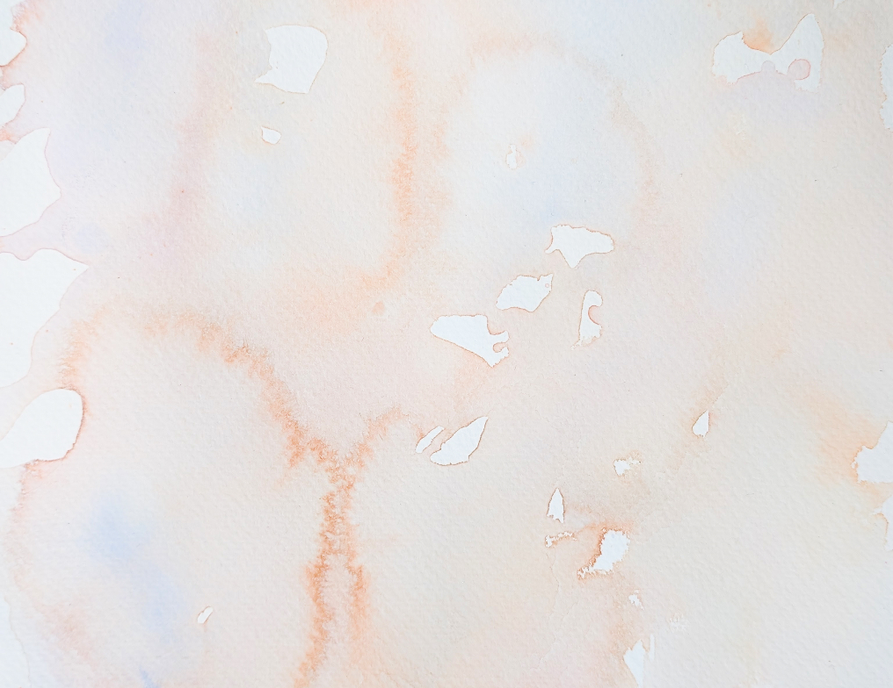

1.
Trouver l'idée du projet
La première étape de ce projet a été de trouver le concept. Je voulais y aller avec une expérience visuelle plus que un jeu. L'idée m'est alors venu de utiliser un visuel d'aquarelle.
2.
Création du système d'interaction
J'ai créé la logique entre la version avec une personne présente et aucune personne présente. Le son arrête aussi de jouer lorsqu'il n'y a pas personne.
3.
Création du visuel
J'ai suivi un tutoriel pour commencer le tutoriel. Une fois complété, j'ai ajusté le projet pour suivre mes besoins avec ce que je voulais atteindre pour mon projet.
4.
Ajout de détails
Une fois la base du projet complété, j'ai ajouté d'autres effets comme celui du changement de la couleur quand quelqu'un lève le bras.
5.
Présentation au projecteur
Une fois le projet terminé, il a été affiché dans le corridor de l'école pour tous le monde qui passe devant.
